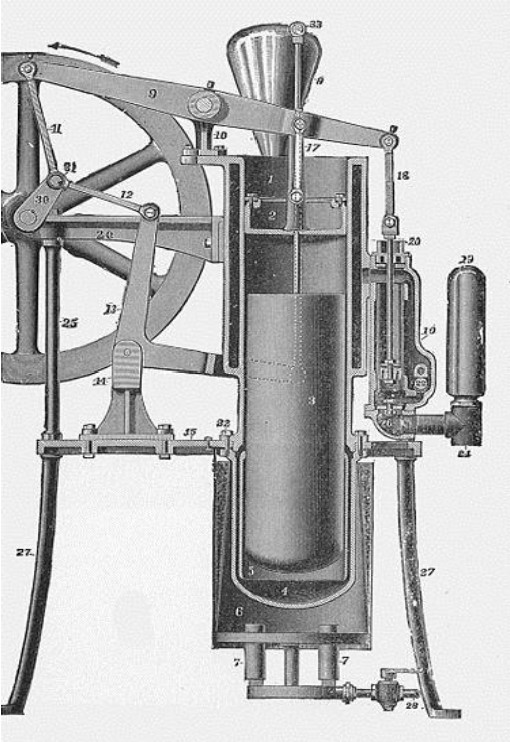
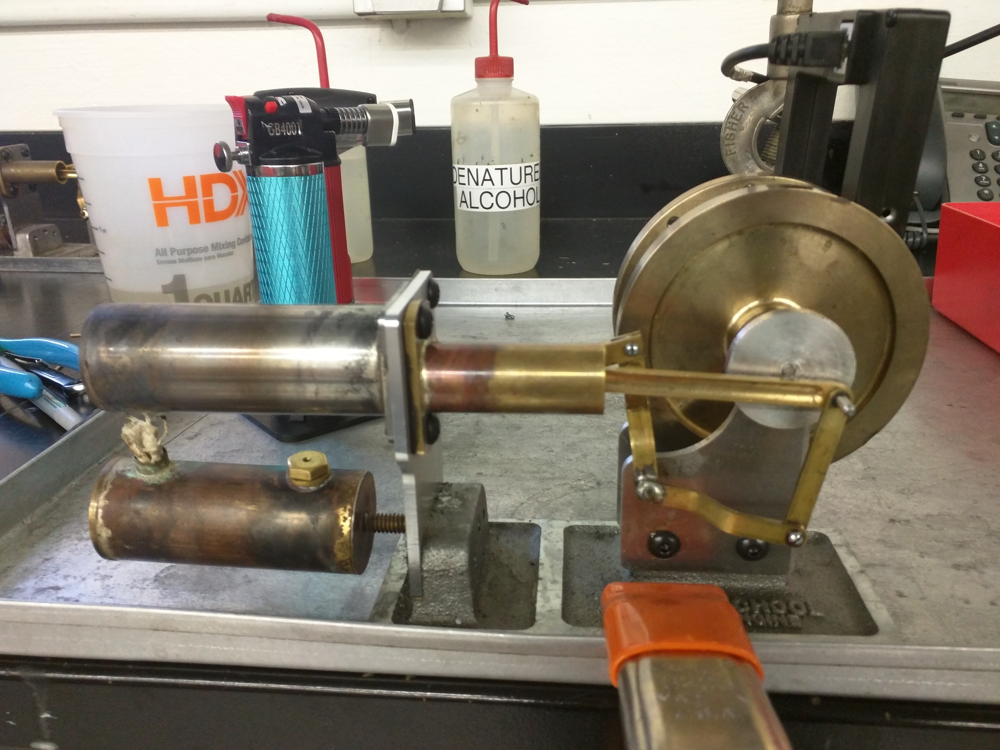

Stirling Engine
In this project, I iteratively designed and successfully tested a Stirling engine - this involved skills including but not limited to 3 axes milling, 2 axes lathing, laser cutting, CAD and SolidWorks, 3D printing and welding, and subsequently won class competition for most efficient and fastest running Stirling engine.

